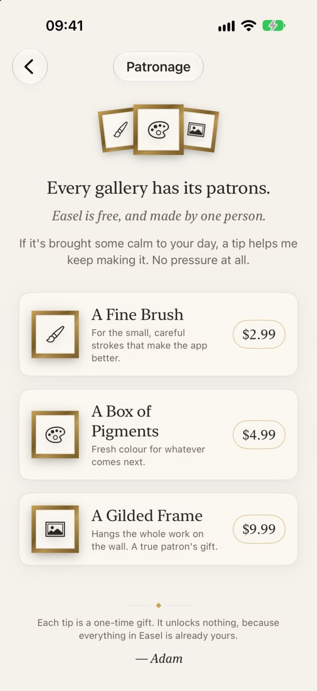

Dary
Otwórz Ustawienia → Wsparcie → Zostań mecenasem. Do wyboru są trzy jednorazowe dary:
- Cienki pędzel: na drobne, staranne pociągnięcia, które ulepszają aplikację.
- Pudełko pigmentów: świeże kolory na to, co przyjdzie dalej.
- Złocona rama: zawiesza całe dzieło na ścianie. Prawdziwy dar mecenasa.
App Store pokazuje ceny w twojej lokalnej walucie.

Co daje napiwek
W aplikacji nic się nie zmienia: wszystko w Easel już jest twoje. Napiwki to jednorazowe zakupy, nigdy subskrypcje, i w całości obsługuje je Apple. Gdy zostawisz napiwek, Sobotnia notka przestaje przychodzić.
Inne sposoby pomocy, które nic nie kosztują: oceń Easel w App Store, udostępnij obraz albo zgłoś pomysł na tablicy opinii.